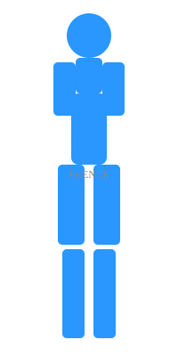
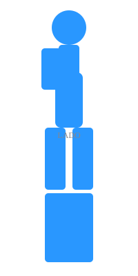
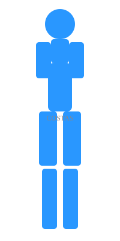

Musculação
Escolha o grupo muscular que deseja trabalhar



Superior
Inferior
Corrida
Planos de treino, calculadora de ritmo e dicas
Plano 5K - Iniciante
Semana 1
Seg: 5min corrida / 3min caminando
Qua: 5min corrida / 3min caminhada
Sex: 5min corrida / 3min caminhada
Sáb: 5min corrida contínua
Semana 2
Seg: 8min corrida / 2min caminhada
Qua: 8min corrida / 2min caminhada
Sex: 8min corrida / 2min caminhada
Sáb: 10min corrida contínua
Semana 3
Seg: 10min corrida / 2min caminhada
Qua: 12min corrida contínua
Sex: 10min corrida / 2min caminhada
Sáb: 15min corrida contínua
Semana 4
Seg: 15min corrida
Qua: 20min corrida
Sex: 15min corrida
Sáb: CORRIDA 5K!
Calculadora de Ritmo
Ritmo necessário: --:-- /km
Guia de Calçados
Neutro
Para pisada neutra
- Nike Pegasus
- Brooks Ghost
- ASICS Nimbus
Estável
Para pronação leve
- Saucony Guide
- Brooks Adrenaline
- Hoka Arahi
Correção
Para supinação
- Brooks Transcend
- Saucony Hurricane
Dicas Essenciais
Alongamento Pré-Corrida
fazer alongamento dinâmico: pernas, quadris, tornozelos. 5-10 minutos.
Alongamento Pós-Corrida
Alongamento estático mantendo 30 segundos por músculo. Focar em isquiotibiais,quadríceps,panturrilhas.
Alimentação
2-3 horas antes: carboidratos kompleksos. 30min antes: gel ou fruta.
Hidratação
200-500ml a cada 20min durante treino. Mais em dias quentes.
Recuperação
Dormir 7-9 horas. Alongar. Massage. Descanso ativo leve.
Yoga
Posturas, sequências e técnicas de respiração
Posturas para Iniciantes
Gato-Vaca
Marjaharaasana
IniciantePostura da Criança
Balasana
InicianteCobra
Bhujangasana
InicianteMontanha
Tadasana
InicianteÁrvore
Vrksasana
InicianteArcher
Akarna Dhanurasana
IniciantePosturas Intermediárias
Cão Olhando Baixo
Adho Mukha Svanasana
IntermediárioGuerreiro I
Virabhadrasana I
IntermediárioGuerreiro II
Virabhadrasana II
IntermediárioTriângulo
Trikonasana
IntermediárioCisne
Hamsasana
IntermediárioLua Crescente
Chandrabhadrasana
IntermediárioPosturas Avançadas
Corvo
Kakasana
AvançadoRoda
Urdhva Dhanurasana
AvançadoParachute
Eka Pada Bakasana
AvançadoCandle
Sarvangasana
AvançadoMeridian
Sirsasana
AvançadoSplits
Hanumanasana
AvançadoSequências Prontas
🌅 Manhã
15 min - Energizante
- Respiração (2min)
- Gato-Vaca (3min)
- Guerreiro I/II (5min)
- Cão-olhando-baixo (3min)
- Montanha (2min)
🌙 Noite
20 min - Relaxante
- Postura da Criança (3min)
- Gato-Vaca (3min)
- Cobra (3min)
- Balasana (5min)
- Meditação (6min)
🧘 Flexibilidade
30 min - Alongamento
- Aquecimento (5min)
- Triângulo (5min)
- Guerreiro (5min)
- Pigeon (5min)
- Sentada frontal (10min)
Pranayama - Técnicas de Respiração
Ujjayi
Respiração vitoriosa. Respirar pelo nariz com restrição da glote. Produz som de oceano.
Nadi Shodhana
Respiração alternada pelas narinas. Limpa canais energéticos. 5 minutos.
Kapalabhati
Respiração de limpeza. Exalações activas pelo nariz. Limpa pulmões.
Alongamento
Exercícios por região do corpo
Alongamentos Cervicais
Flexão Lateral
Incline a cabeça para um lado, segure por 30 segundos. Repita do outro lado.
EstáticoRotação
Gire a cabeça para um lado, segure 30 segundos. Repita.
EstáticoQueixo ao Peito
Leve o queixo ao peito, segure 30 segundos.
EstáticoLevantamento de Ombros
Levante os ombros até as orelhas, segure 5 segundos. Repita 10x.
DinâmicoAlongamentos de Ombro
Cross-body
Puxe o braço pelo corpo, segure 30 segundos.
EstáticoDoorway
Encoste no batente, avance o corpo. Segure 30 segundos.
EstáticoCirculares
Gire os ombros para frente e para trás. 10 voltas cada.
DinâmicoOverhead
Levante as mãos acima, entrelace. Alongue 30 segundos.
EstáticoAlongamentos de Coluna
Gato-Vaca
Alternar entre arquear e concave a coluna. 10 repetições.
DinâmicoTorção Sentado
Sente, gire o tronco. Segure 30 segundos cada lado.
EstáticoIsquiotibiais
Sentado, estenda as pernas, segure os pés. Segure 30 segundos.
EstáticoCobra
Deite, levante o tronco. Segure 30 segundos.
EstáticoAlongamentos de Quadril
Pigeon
Uma perna à frente dobrada, outra estendida. Segure 60 segundos.
EstáticoBorboleta
Sente, junte os pés, segure os tornozelos. Segure 60 segundos.
Estático90/90
Sente com uma perna a 90° na frente. Segure 30 segundos.
EstáticoAdutores
Faça agachamento wide stance. Segure 60 segundos.
EstáticoAlongamentos de Joelho
Quádriceps
Em pé, puxe o calcanhar ao glúteo. Segure 30 segundos.
EstáticoIsquiotibiais
Em pé, dobre para frente. Segure 30 segundos.
EstáticoFlexor do Quadril
Em lunge, baixe o joelho chão. Segure 30 segundos.
EstáticoSartório
Posição de "W". Segure 30 segundos.
EstáticoAlongamentos de Tornozelo
Panturrilha
Em pé, frente contra parede. Segure 30 segundos.
EstáticoSóleo
Mesmo exercício com joelho dobrado. Segure 30 segundos.
EstáticoCirculatórios
Gire o tornozelo em círculos. 10 cada direção.
DinâmicoTornozelo
Puxe o pé para cima com-toalha. Segure 30 segundos.
EstáticoTipos de Alongamento
Estático
Mantém a posição por 30-60 segundos. Melhor para pós-treino.
Melhor após treinoDinâmico
Movimentos controlados através da amplitude. Melhor pré-treino.
Melhor antes do treinoFNP
Facilitação Neuromuscular Proprioceptiva. Avançado. Contrair e relaxar.
Para atletas avançados